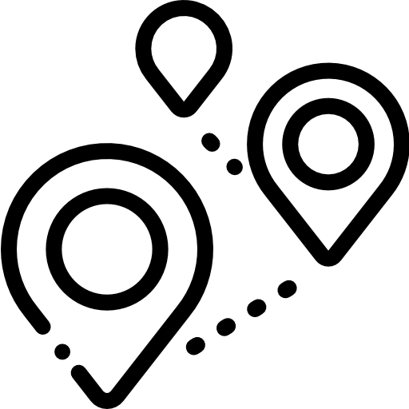
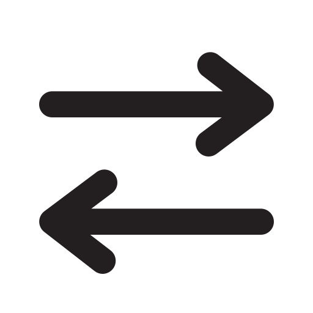
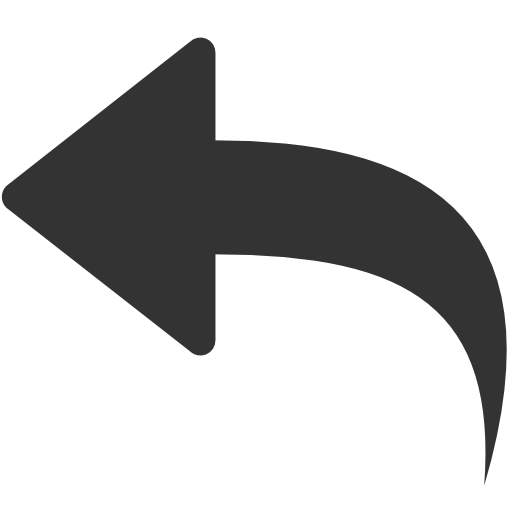

Plan your next adventure
Snap to trails
Manual line

Swap A and B

Undo
Redo
Clear
Import GPX
Export GPX
None
Toggle overlay mode
None
Slope
Surface
Difficulty
POI
Loading offline routing network…
Offline routing
Debug network
Left-click the map to set start and end points or add via markers along the route. Right-click the route to add bivouac splits. Drag markers to adjust the route or double-click via points to remove them.
Toggle imagery layers
Terrain
Hillshade: Igor
Toggle 2D/3D view